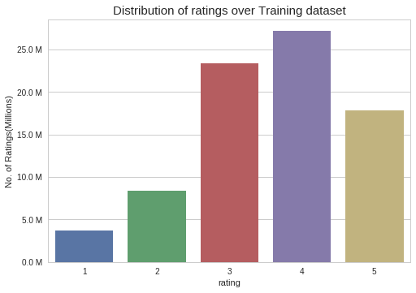

Introduction
Netflix is all about connecting people to the movies they love. To help customers find those movies, they developed world-class movie recommendation system: CinematchSM. Its job is to predict whether someone will enjoy a movie based on how much they liked or disliked other movies. Netflix use those predictions to make personal movie recommendations based on each customer’s unique tastes. And while Cinematch is doing pretty well, it can always be made better.Now there are a lot of interesting alternative approaches to how Cinematch works that netflix haven’t tried. Some are described in the literature, some aren’t. We’re curious whether any of these can beat Cinematch by making better predictions. Because, frankly, if there is a much better approach it could make a big difference to our customers and our business.
Problem Statement
We Netflix provided a lot of anonymous rating data, and a prediction accuracy bar that is 10% better than what Cinematch can do on the same training data set. (Accuracy is a measurement of how closely predicted ratings of movies match subsequent actual ratings.)
Objectives
- Predict the rating that a user would give to a movie that he ahs not yet rated.
- Minimize the difference between predicted and actual rating (RMSE and MAPE).
Constraints:
- Some form of interpretability.
Type of Machine Learning Problem
For a given movie and user we need to predict the rating would be given by him/her to the movie.
The given problem is a Recommendation problem
It can also seen as a Regression problem
Performance metric
Objective and Constraints
- Minimize RMSE.
- Try to provide some interpretability.
Preprocessing
- Converting / Merging whole data to required format: u_i, m_j, r_ij
- Checking for NaN values,Removing Duplicates
- Basic Statistics (#Ratings, #Users, and #Movies)
- Spliting data into Train and Test(80:20)
Exploratory Data Analysis
- Distribution of ratings

- Effect on the rating on day of week

- Average user rating

- Number of Ratings per a month

- Number of Ratings per a year

- Analysis on the Ratings given by user

- Analysis of ratings of a movie given by a user

- Number of ratings on each day of the week

- PDF's & CDF's of Avg.Ratings of Users & Movies
-

Featurizing data
- GAvg : Average rating of all the ratings
- Similar users rating of this movie:sur1, sur2, sur3, sur4, sur5 ( top 5 similar users who rated that movie.. )
- Similar movies rated by this user:smr1, smr2, smr3, smr4, smr5 ( top 5 similar movies rated by this movie.. )
- UAvg : User's Average rating
- MAvg : Average rating of this movie
- rating : Rating of this movie by this user.
- Transforming data for Surprise models
Applying Machine Learning models
| S.NO. |
MODEL |
RMSE |
| 1
| XGBoost with initial 13 features |
1.08600311195730506 |
| 2 |
Suprise BaselineModel |
1.0865005562678032 |
| 3 |
XGBoost with initial 13 features + Surprise Baseline predictor |
1.0868914468761874 |
| 4 |
Surprise KNNBaseline predictor |
1.0868914468761874 |
| 5 |
XGBoost with initial 13 features + Surprise Baseline predictor + KNNBaseline predictor |
1.088749005744821 |
| 6
| XgBoost with 13 features + Surprise Baseline + Surprise KNNbaseline + MF Techniques |
1.0891599523508655 |
| 7 |
XgBoost with Surprise Baseline + Surprise KNNbaseline + MF Techniques |
1.095123189648495 |
Procedure
- Merging movies with users and their rating in single dataframe.
- Sorting the dataframe by date and removing any duplicate values.
- performing Exploratory Data Analysis on it,so that we will able to visualise distribition of the ratings,avg rating of the movie or avg rating given by the users to the movie.
- After that we we split our data in train and test which is in ratio of 80:20and try to to EDA on it.
- Creating sparse matrix from train and test data and analysing the sparsity.
- Compute User-User Similarity matrix and Movie-Movie similarity matrix.
- Getting sample sparse matrices from train and test data.
- Featurizing the data by selecting the top 5 ratings given by similar users to a particular user and also top 5 ratings given to similar movies with respect to particular movie.
- work with different machine learning models and compare results.
Conclusion
- Due to high computational cost, I have completed this case study on (18000,3000) training dataset and (9000,1500) testing dataset.
- Every regressor model is hyper tuned for optimal parameters.
- SVD model showed good result among all the models we tried.